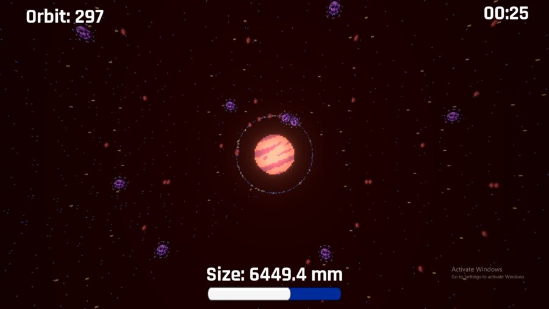
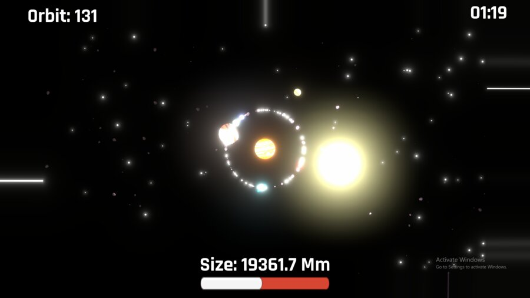
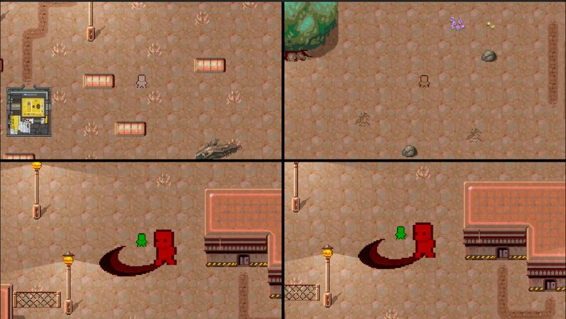
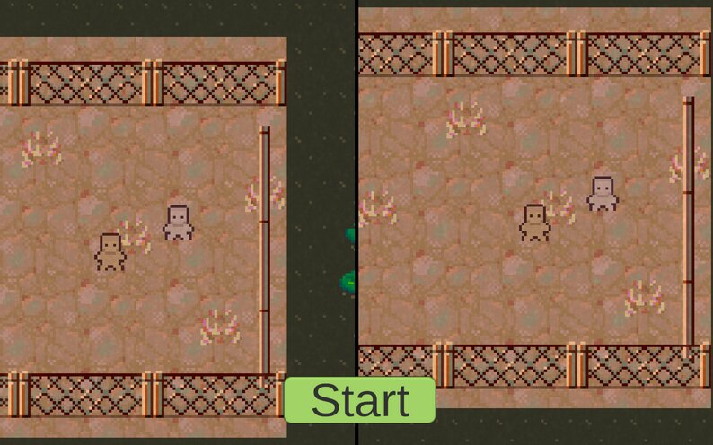
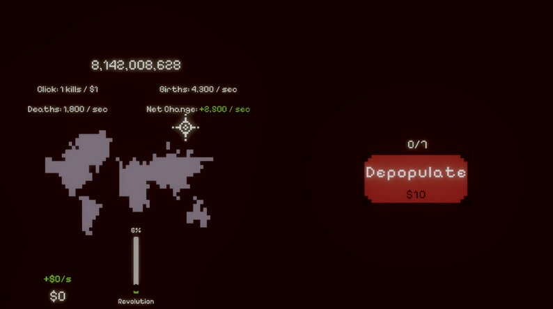
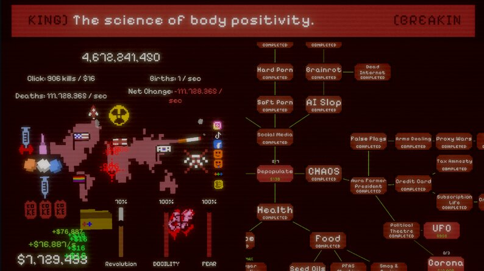
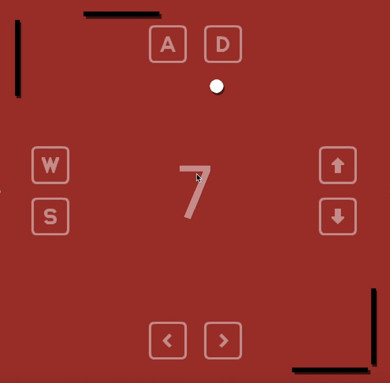

I'm a 2nd-year Game Development student at ESTU. I just genuinely love building games. My interests range from technical design and systems architecture to gameplay programming and rapid prototyping. I enjoy figuring out how things work under the hood and turning raw ideas into playable, fun mechanics. I'm currently looking for an internship to learn the industry ropes and create cool things alongside a real team.
A high-precision chaotic system driven by RK4 integration.
Solo — physics simulation, code and design entirely by myself.
The double pendulum is a simple deterministic system, yet it is extremely sensitive to initial conditions. A microscopic change at the start leads to a macroscopic divergence in the end — this is the Butterfly Effect.
The first pendulum constantly transfers its energy to the second, creating a complex feedback loop. This interconnected motion is what drives the system into unpredictable, non-linear chaos.
Developed with Unity & C#.
double instead of float, keeping the chaos real and precise even in long sessions.You grow from a micro-scale creature into a planet-consuming one, with an absurd story. Inspired by Katamari and made for a local jam.
Co-Dev, Level & Game Designer. Developed by a 2-person team.


A 1v3 asymmetric local split-screen survival party game for 2-4 players (4 recommended). One player is randomly chosen as the Killer, while the rest must work together as Survivors to make it out alive.
Co-Dev, Level & Game Designer. A jam game developed by 2 people for GeliştirJam 2026.
Survivors repair generators, solve code terminals to power the exit gate, and use a dash to dodge and escape. The Killer is bigger and faster, and must hunt everyone down before they get out. Full keyboard and gamepad support.


An incremental game about depopulating 8 billion humans while keeping them docile with modern life. Ranked #214 in the Enjoyment category and #394 overall out of 2245 entries.
Solo entry — music, art, code and design are all mine.


A single-player, 4-way Pong with 3 difficulty modes and a leaderboard! Classic Pong, but you control all 4 paddles alone.
Solo — art, music and code entirely by myself.
This is my very first Godot project! I started with a 2-player Pong and turned it into this.
